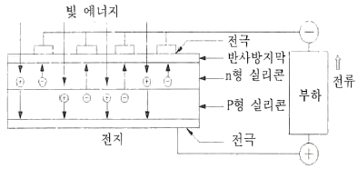
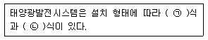
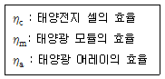
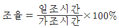
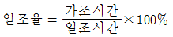
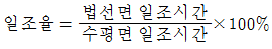
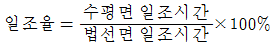
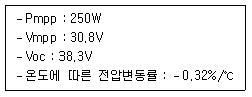

신재생에너지발전설비기사(구) (2017-05-07 기출문제)
1과목: 임의 구분
1. 저항 50Ω, 인덕턴스 200mL의 직렬회로에 주파수 50Hz의 교류를 접속하였다면, 이 회로의 역률은 약 몇 %인가?
- 82.3
- 72.3
- 62.3
- 52.3
(정답률: 68%)

2. 태양전지의 전기적 특성에 대한 설명이 아닌 것은?
- 출력전압은 절대적으로 입사광 세기에 비례한다.
- 태양전지의 출력전압은 온도에 따라 영향을 받는다.
- 최대 밝기의 1/5정도 되는 흐린 날에도 전압이 나온다.
- 태양전지의 출력전류는 입사되는 빛의 세기에 비례한다.
(정답률: 82%)
3. 태양전지 모듈에 부분 음영이 존재할 시, 모듈의 특성은 어떻게 변하는가?
- 효율증가
- 출력감소
- 발열감소
- 변화없음
(정답률: 95%)
4. 상용주파변압기 절연방식의 인버터에 대한 특징이 아닌 것은?
- 구조가 간단하다.
- 소용량의 경우 효율이 낮다.
- 중량이 가볍고 부피가 작다.
- 절연이 가능하고 회로구성이 간단하다.
(정답률: 65%)
5. 태양광발전시스템의 직류출력을 DC－DC 컨버터로 승압하고 인버터로 상용주파의 교류로 변환하는 인버터의 회로방식은?
- 상용주파 변압기 절연방식
- 고주파 변압기 절연방식
- 트랜스리스 방식
- 계통연계 방식
(정답률: 75%)
6. 태양광발전시스템이 개방된 곳에 설치되어 있다면 낙뢰로부터 보호하기 위해 설치하는 것은?
- 피뢰침
- 역류방지장치
- 바이패스장치
- 발광다이오드
(정답률: 94%)
7. 태양전지 모듈 내에 포함되지 않는 것은?
- 충전재
- 태양전지 셀
- 프론트 커버
- 역류방지소자
(정답률: 77%)
8. pn접합 다이오드의 p형 반도체에 (－)바이어스를 가하고 n형 반도체에 (＋)바이어스를 가할 때 나타나는 현상은?
- 결핍층의 폭이 작아진다.
- 결핍층 내부의 전기장이 감소한다.
- 전류는 다수캐리어에 의해 발생한다.
- 다이오드는 부도체와 같은 특성을 보인다.
(정답률: 66%)
9. 25W의 전구 2개를 하루에 5시간 사용하고, 65W의 팬을 하루에 7시간 사용한다고 할때, 24시간 동안의 총 전력량은?
- 455[Wh/day]
- 580[Wh/day]
- 7⑤[Wh/day]
- 880[Wh/day]
(정답률: 84%)
10. 역류방지 다이오드(Blocking Diode)의 역할을 옳게 설명한 것은?
- 과전류가 흐를 때 회로를 차단한다.
- 태양광 모듈의 최적 운전점을 추적한다.
- 태양광 발전시스템의 외함을 접지하는데 사용한다.
- 태양빛이 없을 때 축전지로부터 태양전지를 보호한다.
(정답률: 74%)
11. 실리콘 태양전지의 P형 반도체의 특성 설명으로 옳은 것은?
- 정공이 다수 캐리어이다.
- 전자가 다수 캐리어이다.
- 전자, 정공 모두 다수 캐리어이다.
- 전자, 정공 모두 소수 캐리어이다.
(정답률: 80%)
12. 결정질 실리콘 태양전지 모듈 출력에 대한 설명으로 옳은 것은?
- 방사조도에 비례하여 감소한다.
- 방사조도에 비례하여 증가한다.
- 태양전지 표면온도와는 관계가 없다.
- 태양전지 표면온도가 올라갈수록 계속 증가한다.
(정답률: 77%)
13. 태양을 올려다보는 각도가 30°인 경우, air mass 값은?
- 0.5
- 1.0
- 1.5
- 2.0
(정답률: 76%)
14. 태양광발전시스템 설치장소 선정 시 고려사항으로 가장 거리가 먼 것은?
- 도로 접근성이 용이하여야 한다.
- 일사량 및 일조시간을 고려해야 한다.
- 전력계통 연계조건이 어떠한지 살펴야 한다.
- 설치장소의 고도 및 기압을 측정하여야 한다.
(정답률: 70%)
15. 인버터의 최저 입력전압은 250V, 효율은 90%, 출력용량은 100kW이며, 직류선로의 전압강하는 2V일 때 인버터의 직류입력전류는 약 몇 A인가?
- 401
- 421
- 441
- 461
(정답률: 74%)
16. 다음 그림이 설명하고 있는 전지의 종류는?

- 연료 전지
- 태양 전지
- 2차 전지
- 인산형 전지
(정답률: 90%)
17. 태양전지 모듈에 그림자가 생겼을 때 대비책으로 설치하는 것은?
- 바이패스 다이오드
- 역류방지 다이오드
- 제너 다이오드
- 발광 다이오드
(정답률: 91%)
18. 다음 중 태양광 인버터의 기능이 아닌 것은?
- 태양 추적 기능
- 자동운전 정지 기능
- 단독운전 방지 기능
- 최대전력 추종제어 기능
(정답률: 86%)
19. 태양열발전시스템의 주요 구성요소가 아닌 것은?
- 인버터
- 축열조
- 집열기
- 열교환기
(정답률: 65%)
20. BIPV(Building Integrated PV System)에 대한 설명이 아닌 것은?
- 경제적이며 에너지 효율성이 우수하다.
- 건축 재료와 발전기능을 동시에 발휘하는 방식이다.
- 태양광발전시스템 설계 시 건축가와 사전협의가 필요하다.
- 태양광모듈을 지붕·파사드·블라인드 등 건물외피에 적용하는 방식이다.
(정답률: 83%)
2과목: 임의 구분
21. 태양광발전시스템의 기초설계단계에서 설계자의 업무가 아닌 것은?
- 자금조달
- 토목설계
- 전기설계
- 구조물설계
(정답률: 87%)
22. 5000kW의 수상 태양광 발전소의 RPS 가중치는?(오류 신고가 접수된 문제입니다. 반드시 정답과 해설을 확인하시기 바랍니다.)
- 0.7
- 1.0
- 1.2
- 1.5
(정답률: 58%)
23. 태양전지 어레이의 이격거리 산출 시 적용하는 설계요소가 아닌 것은?
- 구조물 형상
- 남북향간 길이
- 강제의 강도 및 관의 두께
- 태양광발전 위치에 대한 위도
(정답률: 83%)
24. 3000kW 이하의 태양광 발전소 전기사업 허가 시 필요한 서류가 아닌 것은?
- 송전관련 일람도
- 신용평가 의견서
- 발전원가 명세서
- 전기사업허가신청서
(정답률: 71%)
25. 태양광발전시스템의 계통연계 기술기준을 크게 3가지로 구분할 때 해당되지 않는 것은?
- 도입한계용량
- 외부운전성능
- 전력품질
- 보호협조
(정답률: 57%)
26. 초기투자비가 20억원, 설비수명이 20년, 연간 유지비가 1억원인 1MW 태양광 설비의 연간 총 발전량이 1500MW일 때 발전원가(원/kWh)는?
- 90.5
- 120.3
- 133.3
- 155.5
(정답률: 66%)
27. 다음 ( )안에 들어갈 알맞은 내용은?

- ㉠ 고정, ㉡ 추적
- ㉠ 독립, ㉡ 추적
- ㉠ 연계, ㉡ 추적
- ㉠ 역조류, ㉡ 단독
(정답률: 86%)
28. 태양전지 셀과 태양광 모듈에 관한 변환효율의 관계를 옳게 나타낸 것은?

- ηa > ηm > ηc
- ηm > ηc > ηa
- ηc > ηa > ηm
- ηc > ηm > ηa
(정답률: 76%)
29. 태양광발전시스템에서 생산된 전기에너지를 저장하는 시스템의 약어는?
- ESS
- SPD
- PV
- ZCT
(정답률: 83%)
30. 일조율을 나타낸 식으로 옳은 것은?




(정답률: 62%)
31. 어레이 설계 시 설치방식 및 경사각 결정의 기술적 측면에서의 고려사항으로 거리가 먼것은?
- 태양광 발전과 건물과의 통합 수준
- 설치 방식별 특성을 반영
- 시공성 및 유지관리
- 지역의 특성
(정답률: 51%)
32. 전기설비의 개폐기 중 변압기 내부의 이상전류로부터 변압기를 보호하기 위해 변압기 1차측에 설치하는 것은?
- 부하 개폐기
- 컷 아웃 스위치
- 자동 구간 개폐기
- 자동부하 전환 개폐기
(정답률: 75%)
33. 음영의 영향을 가장 많이 받는 인버터 접속방법은?
- 중앙 집중 방식
- 서브 어레이 방식
- 개별 스트링 방식
- 마이크로 인버터 방식
(정답률: 72%)
34. 단독운전 방지기능이 없는 10kW 태양광발전시스템에 380V, 60Hz의 계통전원에 연결되어 운전될 경우, 태양광발전시스템의 출력이 10kW, 부하가 유효전력 10kW, 지상무효전력이 ＋9.5kVar, 진상무효전력이 －10kVar일 때 단독운전이 일어날 경우 예상되는 주파수는 약 얼마인가?
- 58.48Hz
- 59.32Hz
- 60.00Hz
- 61.38Hz
(정답률: 50%)
35. 온도가 －15℃에서 태양전지모듈의 Vmpp와 Voc 약 몇 V인가?

- Vmpp：14.74, Voc：23.20
- Vmpp：24.74, Voc：33.20
- Vmpp：34.74, Voc：43.20
- Vmpp：44.74, Voc：53.20
(정답률: 63%)
36. 1일 전력수용량 산정 수식으로 적합한 것은?
- 1일 전력소비량×1.1
- 1일 전력소비량×1.2
- 1일 전력소비량×1.3
- 1일 전력소비량×1.4
(정답률: 59%)
37. 태양광발전사업을 위한 부지를 선정하고자 한다. 개발행위허가 기준에 따른 개발행위의 규모가 아닌 것은?(오류 신고가 접수된 문제입니다. 반드시 정답과 해설을 확인하시기 바랍니다.)
- 농립지역 30000m2 미만
- 도시 주거지역 10000m2 미만
- 도시 공업지역 30000m2 미만
- 자연환경보전지역 7000m2 미만
(정답률: 66%)
38. 전기시설물 설계 시 설계도서의 실시설계 성과물이 아닌 것은?
- 내역서, 산출서, 견적서
- 설계설명서, 설계도면, 공사시방서
- 용량계산서, 구조계산서, 부하계산서, 간선계산서
- 설계계획서, 개량공사비 내역서, 시스템선정검토서
(정답률: 47%)
39. 한전계통에 이상이 발생 후 분산형 전원이 재투입하기 위해서는 한전계통의 전압 및 주파수가 정상범위로 복귀 후 몇 분간 유지되어야 하는가?
- 1분
- 2분
- 3분
- 5분
(정답률: 80%)
40. 태양광 모듈 설계 시 가대의 수명을 30년 이상 보증하려고 할 때 선정 재질로 가장 바람직한 것은? (단, 경제성 고려는 하지 않는다.)
- 강재
- 스테인리스
- 강재＋도색
- 강재＋용융아연도금 제3과목：태양광 발전시스템 시공
(정답률: 74%)
3과목: 임의 구분
41. 태양광발전설비의 준공 후 감리원이 발주자에게 인수·인계할 목록에 반드시 포함되어야 하는 서류가 아닌 것은?
- 안전교육 실적표
- 기자재 구매서류
- 시설물 인수·인계서
- 품질시험 및 검사성과 총괄표
(정답률: 78%)
42. 태양광발전시스템 중 태양광모듈의 절연내력검사 시 기술기준 내용으로 옳은 것은?
- 최대 사용전압의 1배의 직류전압, 또는 1배의 교류전압을 충전부분과 대지사이에 5분간 인가하여 견뎌야 한다.
- 최대 사용 전압의 1배의 직류전압, 또는 1.5배의 교류전압을 충전부분과 대지사이에 10분간 인가하여 견뎌야 한다.
- 최대 사용전압의 1.5배의 직류전압, 또는 1배의 교류전압을 충전부분과 대지사이에 10분간 인가하여 견뎌야 한다.
- 최대 사용전압의 1.5배의 직류전압, 또는 1.5배의 교류전압을 충전부분과 대지사이에 5분간 인가하여 견뎌야 한다.
(정답률: 81%)
43. 특고압 계통에서 분산형 전원의 연계로 인한 계통 투입, 탈락 및 출력 변동 빈도가 1일 4회 초과, 1시간에 2회 이하이면 순시전압변동률은 몇 %를 초과하지 않아야 하는가?
- 3
- 4
- 5
- 6
(정답률: 42%)
44. 접속함에 관한 설명으로 틀린 것은?
- 접속함 안에 바이패스 다이오드를 설치한다.
- 접속함은 노출이 적고, 소유자의 접근 및 육안확인이 용이한 장소에 설치하여야 한다.
- 접속함 내부 발생열을 배출할 수 있는 환기구 및 방열판을 설치하여야 한다.
- 접속함 전면부는 직사광선을 견딜 수 있는 폴리카보네이트(PC) 또는 동등 이상의 재질로 제작하여야 한다.
(정답률: 77%)
45. 전력계통에서 3권선 변압기(Y－Y－△)를 사용하는 주된 원인은?
- 승압용
- 노이즈 제거
- 제3고조파 제거
- 2가지 용량 사용
(정답률: 86%)
46. 공사업자가 공사시작과 동시에 감리원에게 작성, 제출하여야 할 가설시설물의 설치계획표에 포함되는 사항이 아닌 것은?
- 공사용도로
- 공사예정공정표
- 공사용 임시전력
- 가설사무소, 작업장, 창고 등의 부대시설
(정답률: 58%)
47. 태양광발전시스템 공사 중 태양전지 어레이의 절연저항 측정에 필요한 시험 기자재로 가장 거리가 먼 것은?
- 온도계
- 습도계
- 계전기
- 절연저항계
(정답률: 56%)
48. 접지공사 시 접지극의 매설 깊이는 지하 몇 cm 이상으로 매설하여야 하는가?
- 30
- 60
- 75
- 120
(정답률: 76%)
49. 태양전지 어레이의 상정하중에 대한 설명으로 틀린 것은?
- 적설하중은 모듈면의 수직 적설하중을 나타낸다.
- 고정하중은 모듈과 지지물 등의 질량의 합이다.
- 지진하중은 모듈에 가해지는 직선 지진력을 의미한다.
- 풍압하중은 모듈과 지지물에 가해지는 풍압력의 합이다.
(정답률: 70%)
50. 태양전지 모듈 및 어레이 설치 후의 설명이 아닌 것은?
- 태양전지 모듈의 극성이 올바른지 직류전압계로 확인한다.
- 태양전지 모듈의 설명서에 기재된 단락전류가 흐르는지 직류전류계로 측정한다.
- 태양전지 모듈구조는 설치로 인해 다른 접지의 연접성이 훼손되지 않은 것을 사용한다.
- 태양전지 모듈과 인버터 사이에 직류측 회로는 반드시 접지한다.
(정답률: 76%)
51. 태양광발전시스템에 적용하는 피뢰방식이 아닌 것은?
- 돌침 방식
- 케이지 방식
- 구조체 방식
- 수평도체 방식
(정답률: 54%)
52. 태양전지 어레이의 구조물 설치 시 지반상태에 따른 해결책이 아닌 것은?
- 연약층이 깊을 경우 독립기초로 한다.
- 지반의 허용지지력이 부족할 경우 저판 폭을 증가시키거나 지반을 치환한다.
- 배면토의 강도정수가 부족할 경우 저판 폭을 증가시키거나 사면경사도를 완화한다.
- 지반의 지하수위가 높을 경우 지지력저하로 침하가 발생할 수 있으므로 배수공을 설치한다.
(정답률: 74%)
53. 계통연계형 소형 태양광 인버터의 옥외 설치 시 IP(Ingress Protection rating) 등급은?
- IP 20 이상
- IP 25 이상
- IP 33 이상
- IP 44 이상
(정답률: 70%)
54. 전력계통의 단락용량 경감 대책으로 틀린 것은?
- 사고 시 모선 분리방식을 채용한다.
- 발전기와 변압기의 임피던스를 작게 한다.
- 계통 간을 직류설비라든지 특수한 장치로 연계한다.
- 계통을 분할하거나 송전선 또는 모선 간에 한류리액터를 삽입한다.
(정답률: 58%)
55. 태양광발전시스템 시공 작업 중 감전 방지대책으로 가장 거리가 먼 것은?
- 일반장갑을 착용한다.
- 우천 시 작업을 금지한다.
- 이중절연 처리된 공구를 사용한다.
- 작업 전 태양전지 모듈표면에 차광막을 씌워 태양광을 차폐한다.
(정답률: 89%)
56. 태양광모듈 어레이 설치 후 확인 점검 시 사용하는 기기로만 짝지어진 것은?
- 교류전압계, 교류전류계
- 교류전압계, 직류전류계
- 직류전압계, 직류전류계
- 직류전압계, 교류전류계
(정답률: 72%)
57. 전력기술관리법 시행령 및 시행규칙의 감리원 업무범위가 아닌 것은?
- 현장 조사 및 분석
- 공사 단계별 기성확인
- 입찰참가자 자격심사 기준 작성
- 현장 시공상태의 평가 및 기술지도
(정답률: 73%)
58. 태양광발전시스템 중 태양전지 어레이용 가대의 재질 및 형태에 따른 검토사항 중 아닌것은?
- 절삭 등의 가공이 쉽고 무거워야 한다.
- 최소 20년 이상의 내구성을 가져야 한다.
- 불필요한 가공을 피할 수 있도록 규격화 되어야 한다.
- 염해, 공해 등을 고려하여 녹이 발생하지 않아야 한다.
(정답률: 82%)
59. 태양전지의 모듈 설치 및 조립 시 주의사항으로 틀린 것은?
- 태양전지 모듈의 파손방지를 위해 충격이 가지 않도록 한다.
- 태양전지 모듈과 가대의 접합 시 부식방지용 가스켓을 적용한다.
- 태양전지 모듈을 가대의 상단에서 하단으로 순차적으로 조립한다.
- 태양전지 모듈의 필요 정격전압이 되도록 1 스트링의 직렬매수를 선정한다.
(정답률: 78%)
60. 설계 감리원이 설계업자로부터 착수신고서를 제출받아 적정성 여부를 검토하여 보고하여야 하는 것은?
- 근무상황부
- 예정공정표
- 설계감리일지
- 설계감리기록부
(정답률: 67%)
4과목: 임의 구분
61. 자가용 태양광 발전소의 태양전지·전기설비 계통의 정기검사 시기는?
- 1년 이내
- 2년 이내
- 3년 이내
- 4년 이내
(정답률: 76%)
62. 박막 태양광발전 모듈은 광조사 시험 후 STC 조건에서의 최대 출력 측정값이 제조자가 표시한 정격 출력 최소값의 최소 몇 % 이상이어야 하는가?
- 80
- 85
- 90
- 95
(정답률: 52%)
63. 태양광발전시스템의 운전 시 조작 방법으로 틀린 것은?
- Main, VCB 전압 확인
- 접속반, 인버터 DC전압 확인
- 즉시 인버터 정상작동여부 확인
- DC용 차단기 On, AC측 차단기 On
(정답률: 66%)
64. 태양광발전시스템 운전조작 방법 중 태양전지 모듈에 대한 설명으로 틀린 것은?
- 태양전지 모듈 표면은 주로 일반 유리로 되어 있어, 약한 충격에도 파손될 수 있다.
- 태양전지 모듈 표면에 그늘이 지거나, 나뭇잎 등이 떨어져 있는 경우 전체적인 발전효율 저하 요인으로 작용할 수 있다.
- 발전효율을 높이기 위해 부드러운 천으로 이물질을 제거하며, 태양전지 모듈 표면에 흠이 생기지 않도록 주의해야 한다.
- 풍압이나 진동으로 인하여 태양전지 모듈과 형강의 체결 부위가 느슨해지는 경우가 있으므로 정기적으로 점검해야 한다.
(정답률: 84%)
65. 전기사용용전기설비 검사를 받고자 하는 자는 안전공사에 검사희망일 며칠 전에 정기검사를 신청하여야 하는가?
- 3
- 5
- 7
- 10
(정답률: 86%)
66. 태양전지 어레이의 출력 확인 시험 중 개방전압 측정순서에 대한 설명으로 틀린 것은?
- 접속함의 주개폐기를 개방(OFF)한다.
- 접속함의 각 스트링의 MCCB 또는 퓨즈가 있는 경우 개방(OFF)한다.
- 각 모듈이 그늘 져 있지 않은지 확인한다.
- 출력개폐기의 입력부에 서지 업서버를 취부하고 있는 경우에는 접지단자를 분리시킨다.
(정답률: 77%)
67. 태양광발전시스템의 점검에서 유지보수 점검 종류가 아닌 것은?
- 일시점검
- 일상점검
- 정기점검
- 임시점검
(정답률: 70%)
68. 소형 태양광 발전용 3상 독립형 인버터의 경우 부하 불평형 시험 시 정격 용량에 해당하는 부하를 연결한 후 U상, V상, W상 중 한 상의 부하를 0으로 조정한 후 몇 분 동안 운전하는가?
- 10
- 15
- 30
- 60
(정답률: 51%)
69. 태양광발전용 접속함의 환경시험 중 충격시험에서의 시험조건으로 틀린 것은?
- 정현반파
- 가속도：500m/s2
- 공칭 펄스：11ms
- 상하 방향 각 5회
(정답률: 54%)
70. 중대형 태양광발전용 계통연계형 인버터의 효율 시험에 대한 설명으로 틀린 것은?
- Euro 변환 효율로 측정한다.
- 운전시작 후 최소한 1시간 이후에 효율을 측정한다.
- 정격용량이 10kW 초과 30kW 이하에서의 효율은 90% 이상이어야 한다.
- 정격용량이 30kW 초과 100kW 이하에서의 효율은 92% 이상이어야 한다.
(정답률: 59%)
71. 결정질 실리콘 태양광발전 모듈의 성능을 시험하는 시험장치가 아닌 것은?
- 항온항습 장치
- 염수분무 장치
- 우박시험 장치
- 저온방전시험 장치
(정답률: 60%)
72. 도체의 저항, 두 점 사이의 전압 및 전류세기를 측정하는 검사장비는?
- 검전기
- 멀티미터
- 접지저항계
- 오실로스코프
(정답률: 85%)
73. 태양광발전시스템에서 사용되는 송·변전 시스템 점검사항 중 비상정지회로의 점검은 언제 수행되어야 하는가?
- 정기점검
- 일시점검
- 외관점검
- 일상순시점검
(정답률: 80%)
74. 태양광발전시스템 성능평가의 분류로 틀린 것은?
- 경제성
- 신뢰성
- 설치형태
- 발전성능
(정답률: 58%)
75. 태양전지 어레이 점검 시 가장 먼저 점검해야 하는 것은?
- 개방전류
- 정격전류
- 개방전압
- 단락전압
(정답률: 78%)
76. 태양광발전시스템에서 사용되는 배선 케이블의 손상유무를 파악하는 육안점검 사항으로 틀린 것은?
- 배선의 저항
- 배선의 늘어짐
- 배선의 결선상태
- 배선의 변색 및 변형
(정답률: 84%)
77. 누전에 의한 인사사고 및 화재로부터 인명과 재산을 지키기 위해 전기기기의 접지를 완벽하게 시공해야 한다. 이에 해당하는 대상이 아닌 것은?
- 금속관
- 목재구조
- 전기기기의 가대
- 케이블 피복금속체
(정답률: 87%)
78. 접속함에 설치된 태양전지와 접지선 간의 절연저항은 DC 500V 메거로 측정 시 최소 몇 MΩ 이상이어야 하는가?(오류 신고가 접수된 문제입니다. 반드시 정답과 해설을 확인하시기 바랍니다.)
- 0.1
- 0.2
- 0.5
- 1
(정답률: 39%)
79. 태양광발전시스템의 일상점검 시 태양전지 어레이의 육안점검 항목이 아닌 것은?
- 접지저항
- 지지대의 부식 및 녹
- 표면의 오염 및 파손
- 외부배선(접속케이블)의 손상
(정답률: 88%)
80. 태양광발전시스템에 설치된 퓨즈의 고장을 점검하기 위한 방법으로 틀린 것은?
- 육안 검사
- 다기능 측정
- 전력망 분석
- 입출력 측정
(정답률: 64%)
5과목: 임의 구분
81. 고압의 계기용변성기의 2차측 전로에는 제 몇 종 접지공사를 하여야 하는가?
- 제1종 접지공사
- 제2종 접지공사
- 제3종 접지공사
- 특별 제3종 접지공사
(정답률: 53%)
82. 전기설비기술기준에서 저압전선로 중 절연부분의 전선과 대지 사이 및 전선의 심선 상호간의 절연저항은 사용전압에 대한 누설전류가 최대 공급전류의 얼마를 넘지 않도록 하여야 하는가?
- 1/1414
- 1/1732
- 1/2000
- 1/3000
(정답률: 77%)
83. 녹색인증의 유효기간은 녹색 인증을 받은 날부터 몇 년으로 하는가? (단, 유효기간을 연장하지 않는 경우이다.)
- 1
- 3
- 5
- 10
(정답률: 56%)
84. 한국전력거래소의 수행업무가 아닌 것은?
- 전력계통의 설계에 관한 업무
- 회원의 자격 심사에 관한 업무
- 전력거래량의 계량에 관한 업무
- 전력시장의 개설·운영에 관한 업무
(정답률: 69%)
85. 초대사용전압이 22.9kV인 중성점 접지식 전로(중성선을 가지는 것으로서 그 중성선을 다중접지 하는 것에 한한다.)의 절연내력 시험전압은 최대사용전압의 몇 배의 전압인가?
- 1.25
- 1.12
- 0.92
- 0.80
(정답률: 67%)
86. 전력수급기본계획의 수립과 관련하여 기본계획에 포함되어야 할 사항으로 틀린 것은?
- 전력생산의 관리에 관한 사항
- 전력수급의 기본방향에 관한 사항
- 전력수급의 장기전망에 관한 사항
- 발전설비계획 및 주요 송전·변전설비계획에 관한 사항
(정답률: 47%)
87. 신·재생에너지 공급의무자의 2017년도 의무공급량의 비율(%)은?(관련 규정 개정전 문제로 여기서는 기존 정답인 3번을 누르면 정답 처리 됩니다 .자세한 내용은 해설을 참고하세요.)
- 2
- 3
- 4
- 5
(정답률: 75%)
88. 산업통상자원부장관은 공용화 품목의 개발, 제조 및 수요·공급 조절에 필요한 자금의 몇 %까지 중소기업자에게 융자할 수 있는가?
- 20
- 40
- 60
- 80
(정답률: 69%)
89. 전선을 접속하는 경우 전선의 세기를 최소 몇 % 이상 감소시키지 않아야 하는가?
- 10
- 20
- 25
- 30
(정답률: 72%)
90. 등록사항의 변경신고를 하려는 자는 그 사유가 발생한 날부터 며칠 이내에 전기공사업 등록사항 변경신고서에 등록증 및 등록수첩과 구비서류를 첨부하여 지정공사업자단체에 제출하여야 하는가?
- 30
- 60
- 90
- 120
(정답률: 62%)
91. 산업통상자원부장관이 신·재생에너지 기술개발 및 이용·보급 사업비의 조성에 따라 조성된 사업비를 사용할 수 있는 사업이 아닌 것은?
- 신·재생에너지 공급의무화 지원
- 신·재생에너지 이용의무화 지원
- 신·재생에너지 설비 설치기업의 지원
- 신·재생에너지 설비 및 그 부품의 특성화 지원
(정답률: 55%)
92. 발전소·변전소 또는 이에 준하는 곳에 시설하는 배전반에 고압용 기구 또는 전선을 시설하는 경우 적당하지 않은 것은?
- 점검이 용이하게 통로를 시설할 것
- 기기조작에 필요한 공간을 확보할 것
- 회로 설비는 반드시 관에 넣어 시설할 것
- 취급에 위험을 주지 않도록 방호장치를 할 것
(정답률: 83%)
93. 전기안전에 관하여 산업통상자원부장관에게 보고할 사항이 아닌 것은?
- 점검이 용이하게 통로를 시설할 것
- 전기안전관리자의 선임 치 해임에 과한 사항
- 부적합 전기설비에 대한 조치 내용 및 처리 결과
- 전기안전관리대행사업자 및 개인대행자의 등록 및 신고수리 현황
(정답률: 53%)
94. 특별 제3종 접지공사를 하여야 하는 금속체와 대지 사이의 전기저항 값이 최대 몇 Ω 이하인 경우에는 특별 제3종 접지공사를 한 것으로 보는가?
- 2
- 3
- 10
- 100
(정답률: 83%)
95. 산업통상자원부장관이 혼합의무자에게 제출을 요구하는 자료 중 신·재생에너지 연료 혼합시설에 대한 재료가 아닌 것은?
- 신·재생에너지 연료 혼합시설 현황
- 신·재생에너지 연료 혼합시설 변동사항
- 신·재생에너지 연료 혼합시설의 구매단가
- 신·재생에너지 연료 혼합시설의 사용실적
(정답률: 71%)
96. 태양전지 발전소에 시설하는 태양전지 모듈, 전선 및 개폐기 등의 시설기준을 설명한 것 중 틀린 것은?
- 충전부분은 노출되지 않도록 시설할 것
- 태양전지 모듈에 접속하는 부하측 전로에는 그 접속점에 근접하여 개폐기를 시설할 것
- 전선은 공칭단면적 1.5mm2 이상의 연동선 또는 이와 동등 이상의 세기 및 굵기의 것일 것
- 태양전지 모듈을 병렬로 접속하는 전로에는 그 전로에 단락이 생긴 경우에 전로를 보호하는 과전류차단기를 시설할 것
(정답률: 80%)
97. 가공전선로의 지지물에 사용하는 발판 볼트는 지표상 최대 몇 m 미만에 시설하여서는 안 되는가?
- 1.2
- 1.5
- 1.8
- 2.0
(정답률: 63%)
98. 온실가스 감축시설, 에너지 이용 효율화 기술, 청정생산기술, 청정에너지 기술, 자원순환 및 친환경 기술(관련 융합기술을 포함한다.) 등 사회·경제 활동의 전 과정에 걸쳐 에너지와 자원을 절약하고 효율적으로 사용하여 온실가스 및 오염물질의 배출을 최소화하는 기술은?
- 저탄소
- 녹색성장
- 녹색기술
- 녹색생활
(정답률: 69%)
99. 대통령령으로 정하는 신·재생에너지 품질검사기관이 아닌 것은?
- 한국석유관리원
- 한국임업진흥원
- 한국에너지공단
- 한국가스안전공사
(정답률: 59%)
100. 신·재생에너지 공급인증서에 표기되는 공급량 계산 시 적용되는 신·재생에너지 가중치 결정의 고려사항이 아닌 것은?
- 수입대체 효과
- 부존(賦存) 잠재량
- 지역주민의 수용(受容) 정도
- 전력 수급의 안정에 미치는 영향
(정답률: 60%)
하지만 문제에서는 인덕턴스의 크기를 mL 단위로 주었기 때문에, 단위를 Ω로 변환해야 합니다. 인덕턴스의 임피던스는 2πfL로 계산할 수 있습니다. 여기서 f는 주파수이고, L은 인덕턴스의 값입니다. 따라서 인덕턴스의 임피던스는 2π x 50 x 0.2 = 31.4Ω가 됩니다.
따라서 역률은 X_L - X_C = 31.4 - 0 = 31.4Ω가 됩니다. 이를 전체 임피던스인 50Ω으로 나누어 백분율로 나타내면 62.8%가 됩니다. 따라서 정답은 "62.3"입니다.